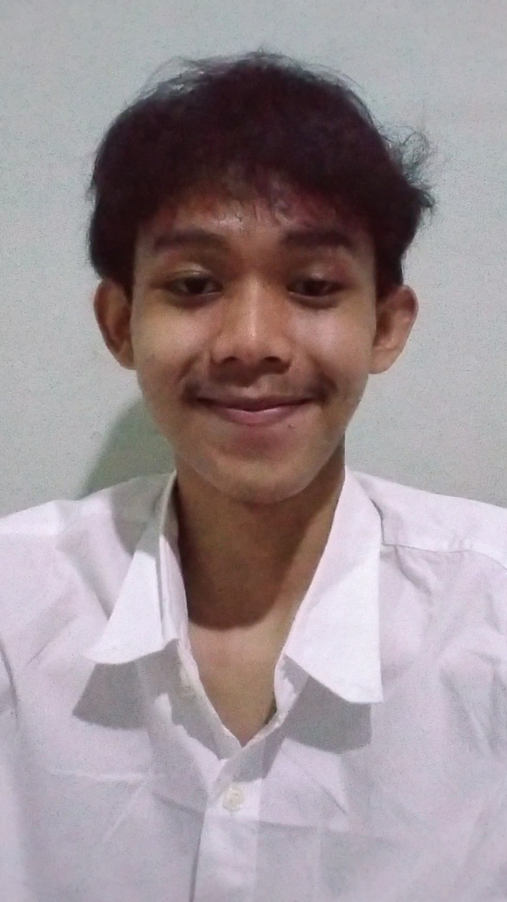

Selamat datang di portofolio saya. Saya adalah seorang Administrative Professional yang menggabungkan ketelitian administrasi dengan pemanfaatan teknologi modern—seperti Python dan MySQL—serta manajemen data untuk memberikan hasil yang efisien.

Berkomitmen untuk menyederhanakan proses kerja melalui otomatisasi data dan sistem administrasi yang cerdas.
Saya memiliki ketertarikan mendalam pada pengelolaan data, perancangan alur kerja (workflow), serta pengelolaan infrastruktur sistem administratif yang efisien dan terstruktur dengan baik.
Selalu bersemangat dalam menghadapi tantangan operasional, mengoptimalkan proses kerja menggunakan teknologi, serta memberikan solusi digital yang fungsional untuk mendukung produktivitas.
Membuat *script* Python untuk memproses dan merapikan data mentah dari file Excel secara otomatis, sehingga memangkas waktu pengerjaan laporan rutin.
Merancang struktur database relasional untuk pencatatan inventaris kantor atau data entri agar pencarian informasi menjadi lebih cepat dan terstruktur.
Membangun situs web portofolio ini secara mandiri menggunakan HTML dan CSS untuk menunjukkan kemampuan teknis, kerapian, serta kreativitas profesional.
Punya pertanyaan, tawaran kolaborasi, atau ingin berdiskusi? Silakan hubungi saya melalui tautan di bawah ini.